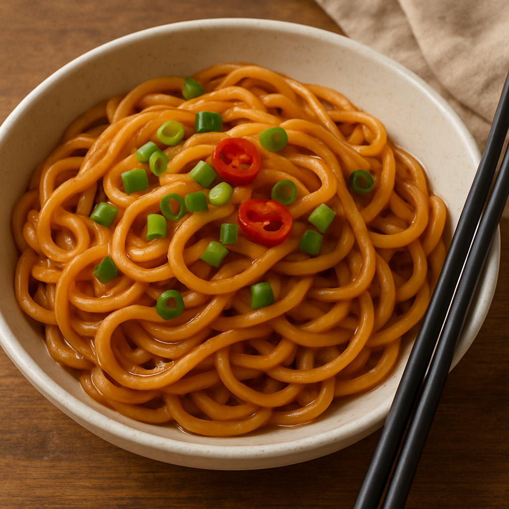

Home
Spicy Asian Noodles for One recipe

Description
Ingredients
- 1 tablespoon creamy peanut butter
- 1 tablespoon ginger paste
- 1 tablespoon chili oil
- 1 tablespoon apricot preserves
- 1 tablespoon balsamic vinegar
- 1 clove garlic, minced
- ½ tablespoon soy sauce
- ½ tablespoon sesame oil
- ½ teaspoon chili powder
- ¼ teaspoon crushed red pepper
- 1 (3 ounce) package ramen noodles
- ½ tablespoon chopped unsalted peanuts
Steps
- Combine peanut butter, ginger paste, chili oil, apricot preserves, balsamic vinegar, garlic, soy sauce, sesame oil, chili powder, and crushed red pepper in a bowl; stir until sauce is smooth.
- Bring water to a boil in a saucepan over medium-high heat. Add ramen noodles and cook, stirring occasionally, until noodles are cooked, about 3 minutes. Discard flavor package.
- Drain noodles, pour into sauce, and combine. Top with chopped peanuts and enjoy.